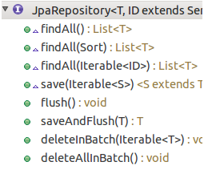

1.SpringData和Jpa需要的包
- 加入SpringData前需要加入Jpa-Hibernate的包，实现基础功能

- 然后加入Sprng的包

2.SpringData配置
SpringData需要在applicationContext.xml中进行配置
-
配置 JPA 的 EntityManagerFactory
<bean id="entityManagerFactory" class="org.springframework.orm.jpa.LocalContainerEntityManagerFactoryBean"> <property name="dataSource" ref="dataSource"></property> <property name="jpaVendorAdapter"> <bean class="org.springframework.orm.jpa.vendor.HibernateJpaVendorAdapter"></bean> </property> <property name="packagesToScan" value="com.bcts.platform"></property> <property name="jpaProperties"> <props> <prop key="hibernate.ejb.naming_strategy">org.hibernate.cfg.ImprovedNamingStrategy</prop> <prop key="hibernate.hbm2ddl.auto">update</prop> <prop key="hibernate.show_sql">true</prop> <prop key="hibernate.format_sql">true</prop> <prop key="hibernate.dialect">org.hibernate.dialect.PostgreSQLDialect</prop> <prop key="hibernate.cache.use_second_level_cache">true</prop> <prop key="hibernate.cache.region.factory_class">org.hibernate.cache.ehcache.EhCacheRegionFactory</prop> <prop key="hibernate.cache.use_query_cache">true</prop> </props> </property> <property name="sharedCacheMode" value="ENABLE_SELECTIVE"></property> </bean> -
配置 SpringData
<jpa:repositories base-package="com.bcts.platform" entity-manager-factory-ref="entityManagerFactory"></jpa:repositories>
3.SpringData的使用
继承JpaRepository接口，可以自动实现多种方法
public interface BaseClassRepository extends JpaRepository<BaseClass, String> {
}
